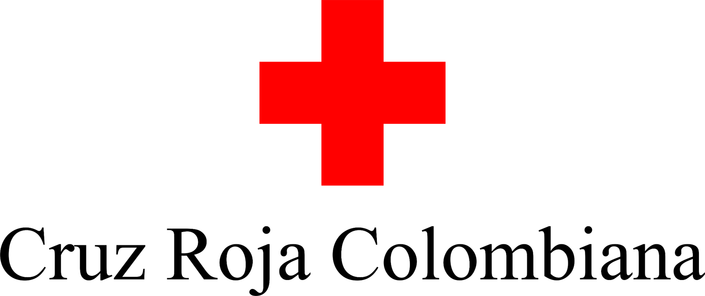
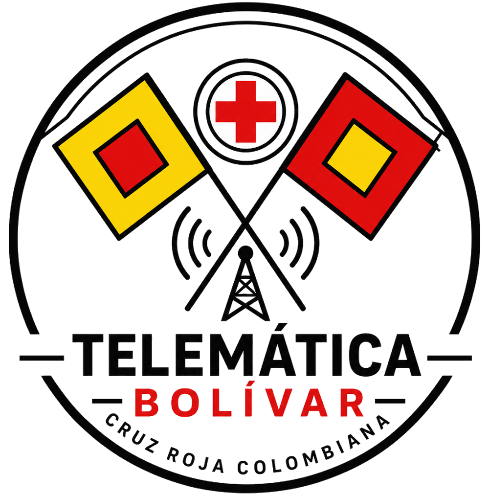

Evaluación Final del Curso
Esta evaluación abarca los 5 módulos del curso. Son 15 preguntas. Para aprobar necesitas un mínimo de 12 respuestas correctas (80%).
📝 Cada intento presenta un cuestionario diferente (A, B o C) seleccionado al azar.

Curso Nivel 1 de Telecomunicaciones

Esta evaluación abarca los 5 módulos del curso. Son 15 preguntas. Para aprobar necesitas un mínimo de 12 respuestas correctas (80%).
📝 Cada intento presenta un cuestionario diferente (A, B o C) seleccionado al azar.